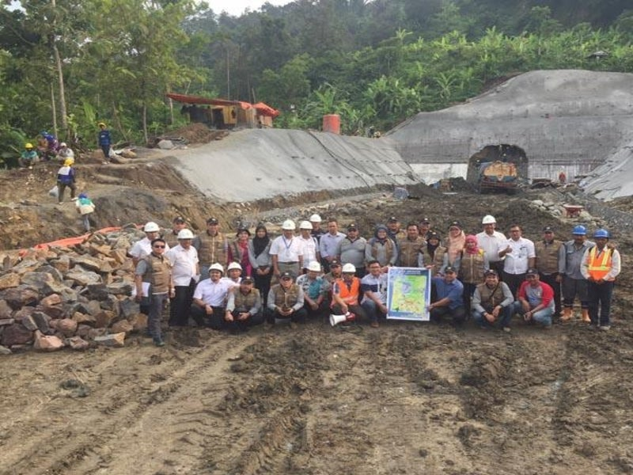
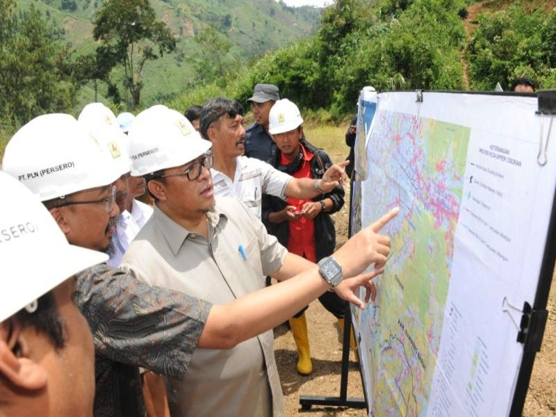
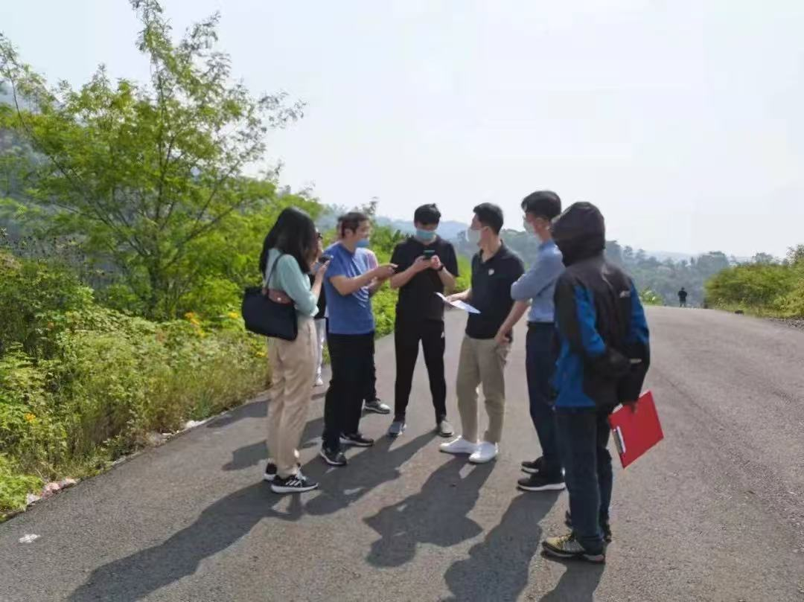

Assistant Project Manager at China Gezhouba Group Corp., supporting the Upper Cisokan Pumped Storage Hydro-Electric Power Plant project in Bandung.
Supported early-stage development of The Upper Cisokan Pumped Storage Hydro-Electric Power Plant project in Bandung, supporting feasibility discussions, site visits, and coordination with legal and technical teams.
Facilitated 10+ B2B and B2G meetings and acted as liaison between CGGC and Indonesian counterparts to align project scope with regulatory and investment priorities.

(1) Upper Cisokan Pumped Storage Power Plant project site. A 1,040 MW cooperative development involving Indonesia's PLN, the Ministry of Energy and Mineral Resources, and CGGC.

(2) Project stakeholders during coordination. Upper Cisokan is located in West Java, Indonesia.

(3) CGGC team, including me, during project site visits.